Summary
This experiment investigates soccer passing drill design. Plackett-Burman screening of pass distance, player count, tempo, rest interval, and cone spacing for passing accuracy and decision speed.
The design varies 5 factors: pass dist m (m), ranging from 5 to 20, player count (players), ranging from 4 to 10, tempo bpm (bpm), ranging from 60 to 120, rest sec (sec), ranging from 10 to 60, and cone spacing m (m), ranging from 2 to 8. The goal is to optimize 2 responses: accuracy pct (%) (maximize) and decision speed ms (ms) (minimize). Fixed conditions held constant across all runs include ball type = size_5, surface = artificial_turf.
A Plackett-Burman screening design was used to efficiently test 5 factors in only 8 runs. This design assumes interactions are negligible and focuses on identifying the most influential main effects.
Key Findings
For accuracy pct, the most influential factors were rest sec (43.8%), tempo bpm (25.0%), pass dist m (18.8%). The best observed value was 83.0 (at pass dist m = 5, player count = 4, tempo bpm = 120).
For decision speed ms, the most influential factors were cone spacing m (28.8%), tempo bpm (23.3%), pass dist m (21.3%). The best observed value was 632.0 (at pass dist m = 20, player count = 10, tempo bpm = 120).
Recommended Next Steps
- Follow up with a response surface design (CCD or Box-Behnken) on the top 3–4 factors to model curvature and find the true optimum.
- Consider whether any fixed factors should be varied in a future study.
- The screening results can guide factor reduction — drop factors contributing less than 5% and re-run with a smaller, more focused design.
Experimental Setup
Factors
| Factor | Low | High | Unit |
|---|
pass_dist_m | 5 | 20 | m |
player_count | 4 | 10 | players |
tempo_bpm | 60 | 120 | bpm |
rest_sec | 10 | 60 | sec |
cone_spacing_m | 2 | 8 | m |
Fixed: ball_type = size_5, surface = artificial_turf
Responses
| Response | Direction | Unit |
|---|
accuracy_pct | ↑ maximize | % |
decision_speed_ms | ↓ minimize | ms |
Configuration
{
"metadata": {
"name": "Soccer Passing Drill Design",
"description": "Plackett-Burman screening of pass distance, player count, tempo, rest interval, and cone spacing for passing accuracy and decision speed"
},
"factors": [
{
"name": "pass_dist_m",
"levels": [
"5",
"20"
],
"type": "continuous",
"unit": "m"
},
{
"name": "player_count",
"levels": [
"4",
"10"
],
"type": "continuous",
"unit": "players"
},
{
"name": "tempo_bpm",
"levels": [
"60",
"120"
],
"type": "continuous",
"unit": "bpm"
},
{
"name": "rest_sec",
"levels": [
"10",
"60"
],
"type": "continuous",
"unit": "sec"
},
{
"name": "cone_spacing_m",
"levels": [
"2",
"8"
],
"type": "continuous",
"unit": "m"
}
],
"fixed_factors": {
"ball_type": "size_5",
"surface": "artificial_turf"
},
"responses": [
{
"name": "accuracy_pct",
"optimize": "maximize",
"unit": "%"
},
{
"name": "decision_speed_ms",
"optimize": "minimize",
"unit": "ms"
}
],
"settings": {
"operation": "plackett_burman",
"test_script": "use_cases/218_soccer_passing_drill/sim.sh"
}
}
Experimental Matrix
The Plackett-Burman Design produces 8 runs. Each row is one experiment with specific factor settings.
| Run | pass_dist_m | player_count | tempo_bpm | rest_sec | cone_spacing_m |
|---|
| 1 | 20 | 10 | 120 | 10 | 2 |
| 2 | 5 | 4 | 120 | 60 | 2 |
| 3 | 5 | 10 | 60 | 60 | 2 |
| 4 | 20 | 10 | 120 | 60 | 8 |
| 5 | 5 | 10 | 60 | 10 | 8 |
| 6 | 20 | 4 | 60 | 60 | 8 |
| 7 | 5 | 4 | 120 | 10 | 8 |
| 8 | 20 | 4 | 60 | 10 | 2 |
Step-by-Step Workflow
1
Preview the design
$ doe info --config use_cases/218_soccer_passing_drill/config.json
2
Generate the runner script
$ doe generate --config use_cases/218_soccer_passing_drill/config.json \
--output use_cases/218_soccer_passing_drill/results/run.sh --seed 42
3
Execute the experiments
$ bash use_cases/218_soccer_passing_drill/results/run.sh
4
Analyze results
$ doe analyze --config use_cases/218_soccer_passing_drill/config.json
5
Get optimization recommendations
$ doe optimize --config use_cases/218_soccer_passing_drill/config.json
6
Multi-objective optimization
With 2 competing responses, use --multi to find the best compromise via Derringer–Suich desirability.
$ doe optimize --config use_cases/218_soccer_passing_drill/config.json --multi
7
Generate the HTML report
$ doe report --config use_cases/218_soccer_passing_drill/config.json \
--output use_cases/218_soccer_passing_drill/results/report.html
Features Exercised
| Feature | Value |
|---|
| Design type | plackett_burman |
| Factor types | continuous (all 5) |
| Arg style | double-dash |
| Responses | 2 (accuracy_pct ↑, decision_speed_ms ↓) |
| Total runs | 8 |
Analysis Results
Generated from actual experiment runs using the DOE Helper Tool.
Response: accuracy_pct
Top factors: rest_sec (43.8%), tempo_bpm (25.0%), pass_dist_m (18.8%).
ANOVA
| Source | DF | SS | MS | F | p-value |
|---|
| Source | DF | SS | MS | F | p-value |
| pass_dist_m | 1 | 18.0000 | 18.0000 | 1.500 | 0.2752 |
| player_count | 1 | 0.0000 | 0.0000 | 0.000 | 1.0000 |
| tempo_bpm | 1 | 32.0000 | 32.0000 | 2.667 | 0.1634 |
| rest_sec | 1 | 98.0000 | 98.0000 | 8.167 | 0.0355 |
| cone_spacing_m | 1 | 8.0000 | 8.0000 | 0.667 | 0.4513 |
| pass_dist_m*player_count | 1 | 32.0000 | 32.0000 | 2.667 | 0.1634 |
| pass_dist_m*tempo_bpm | 1 | 0.0000 | 0.0000 | 0.000 | 1.0000 |
| pass_dist_m*rest_sec | 1 | 8.0000 | 8.0000 | 0.667 | 0.4513 |
| pass_dist_m*cone_spacing_m | 1 | 98.0000 | 98.0000 | 8.167 | 0.0355 |
| player_count*tempo_bpm | 1 | 18.0000 | 18.0000 | 1.500 | 0.2752 |
| player_count*rest_sec | 1 | 2.0000 | 2.0000 | 0.167 | 0.7000 |
| player_count*cone_spacing_m | 1 | 72.0000 | 72.0000 | 6.000 | 0.0580 |
| tempo_bpm*rest_sec | 1 | 72.0000 | 72.0000 | 6.000 | 0.0580 |
| tempo_bpm*cone_spacing_m | 1 | 2.0000 | 2.0000 | 0.167 | 0.7000 |
| rest_sec*cone_spacing_m | 1 | 18.0000 | 18.0000 | 1.500 | 0.2752 |
| Error | (Lenth | PSE) | 5 | 60.0000 | 12.0000 |
| Total | 7 | 230.0000 | 32.8571 | | |
Pareto Chart

Main Effects Plot

Normal Probability Plot of Effects
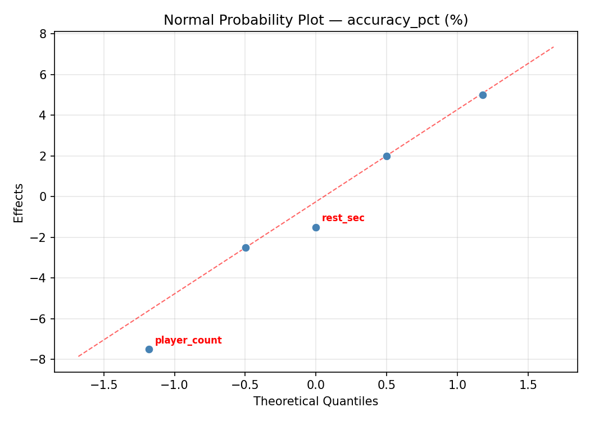
Half-Normal Plot of Effects
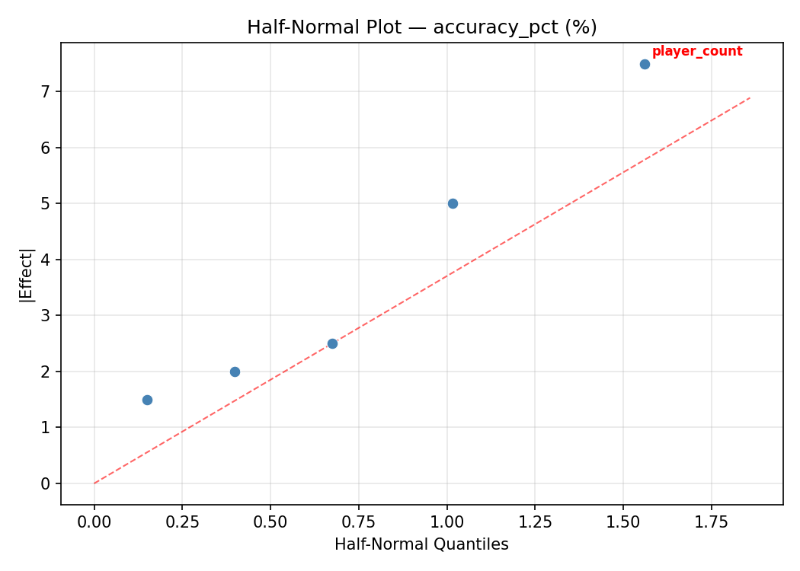
Model Diagnostics

Response: decision_speed_ms
Top factors: cone_spacing_m (28.8%), tempo_bpm (23.3%), pass_dist_m (21.3%).
ANOVA
| Source | DF | SS | MS | F | p-value |
|---|
| Source | DF | SS | MS | F | p-value |
| pass_dist_m | 1 | 12012.5000 | 12012.5000 | 0.667 | 0.4513 |
| player_count | 1 | 7812.5000 | 7812.5000 | 0.434 | 0.5393 |
| tempo_bpm | 1 | 14450.0000 | 14450.0000 | 0.802 | 0.4115 |
| rest_sec | 1 | 2380.5000 | 2380.5000 | 0.132 | 0.7311 |
| cone_spacing_m | 1 | 22050.0000 | 22050.0000 | 1.224 | 0.3190 |
| pass_dist_m*player_count | 1 | 14450.0000 | 14450.0000 | 0.802 | 0.4115 |
| pass_dist_m*tempo_bpm | 1 | 7812.5000 | 7812.5000 | 0.434 | 0.5393 |
| pass_dist_m*rest_sec | 1 | 22050.0000 | 22050.0000 | 1.224 | 0.3190 |
| pass_dist_m*cone_spacing_m | 1 | 2380.5000 | 2380.5000 | 0.132 | 0.7311 |
| player_count*tempo_bpm | 1 | 12012.5000 | 12012.5000 | 0.667 | 0.4513 |
| player_count*rest_sec | 1 | 56448.0000 | 56448.0000 | 3.133 | 0.1370 |
| player_count*cone_spacing_m | 1 | 2520.5000 | 2520.5000 | 0.140 | 0.7237 |
| tempo_bpm*rest_sec | 1 | 2520.5000 | 2520.5000 | 0.140 | 0.7237 |
| tempo_bpm*cone_spacing_m | 1 | 56448.0000 | 56448.0000 | 3.133 | 0.1370 |
| rest_sec*cone_spacing_m | 1 | 12012.5000 | 12012.5000 | 0.667 | 0.4513 |
| Error | (Lenth | PSE) | 5 | 90093.7500 | 18018.7500 |
| Total | 7 | 117674.0000 | 16810.5714 | | |
Pareto Chart

Main Effects Plot
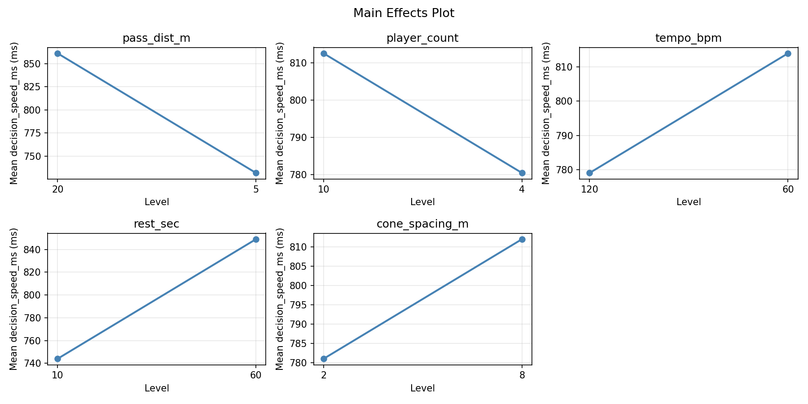
Normal Probability Plot of Effects
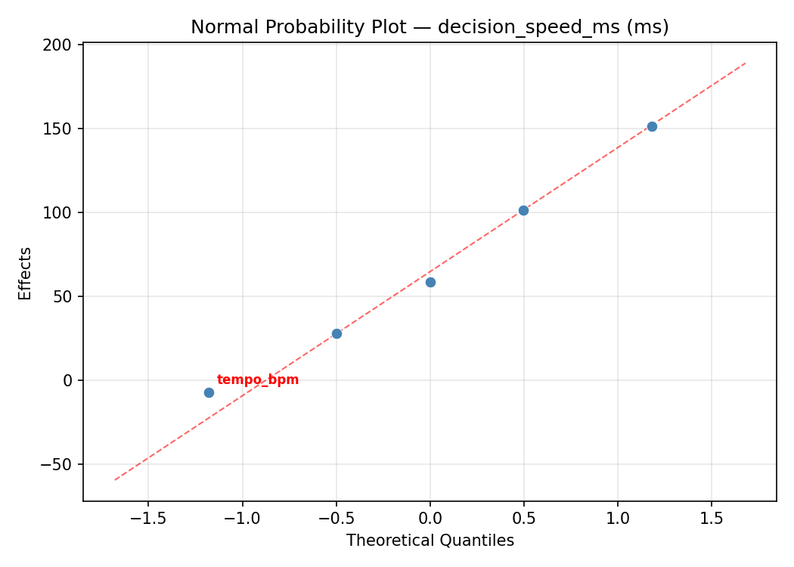
Half-Normal Plot of Effects

Model Diagnostics
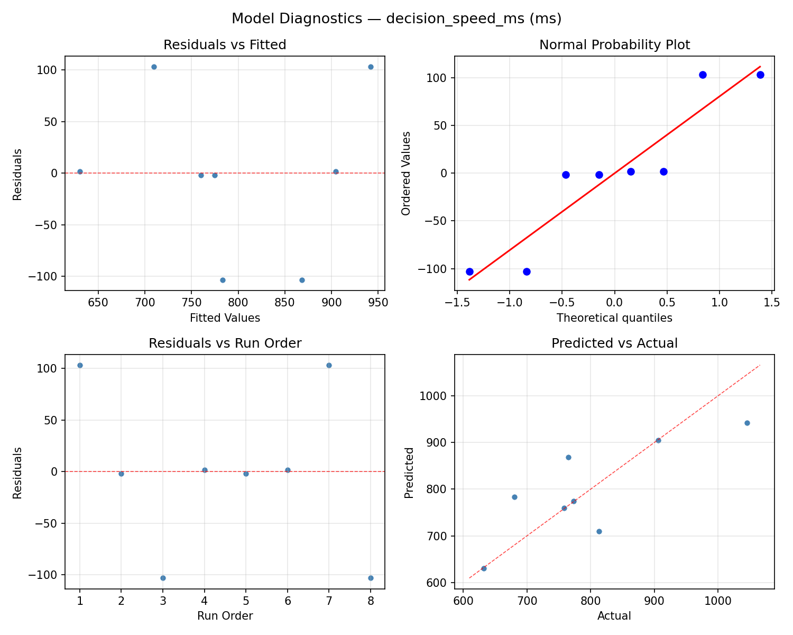
Response Surface Plots
3D surfaces fitted with quadratic RSM. Red dots are observed data points.
accuracy pct pass dist m vs cone spacing m

accuracy pct pass dist m vs player count
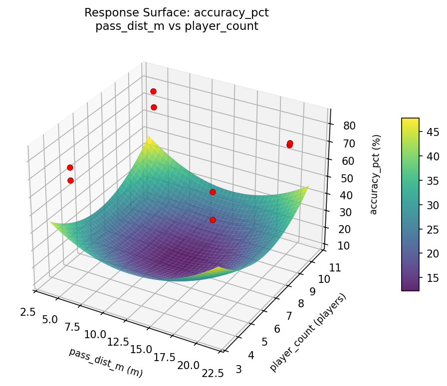
accuracy pct pass dist m vs rest sec

accuracy pct pass dist m vs tempo bpm
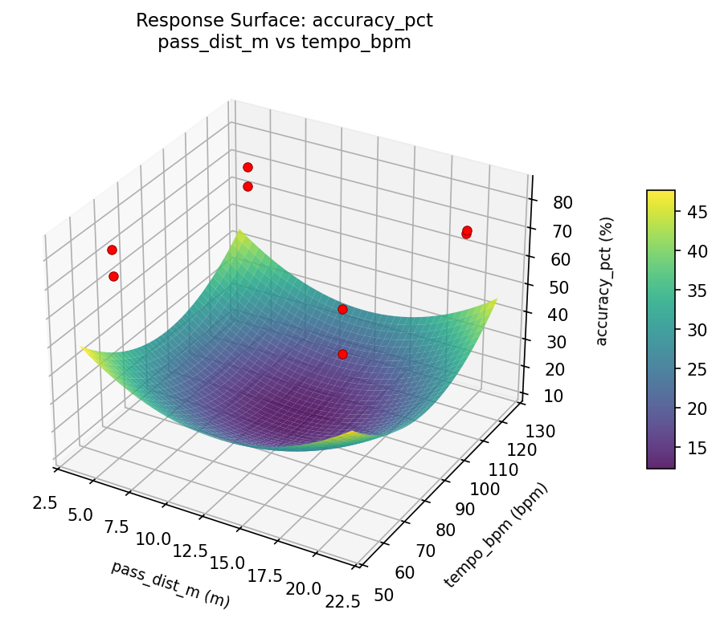
accuracy pct player count vs cone spacing m
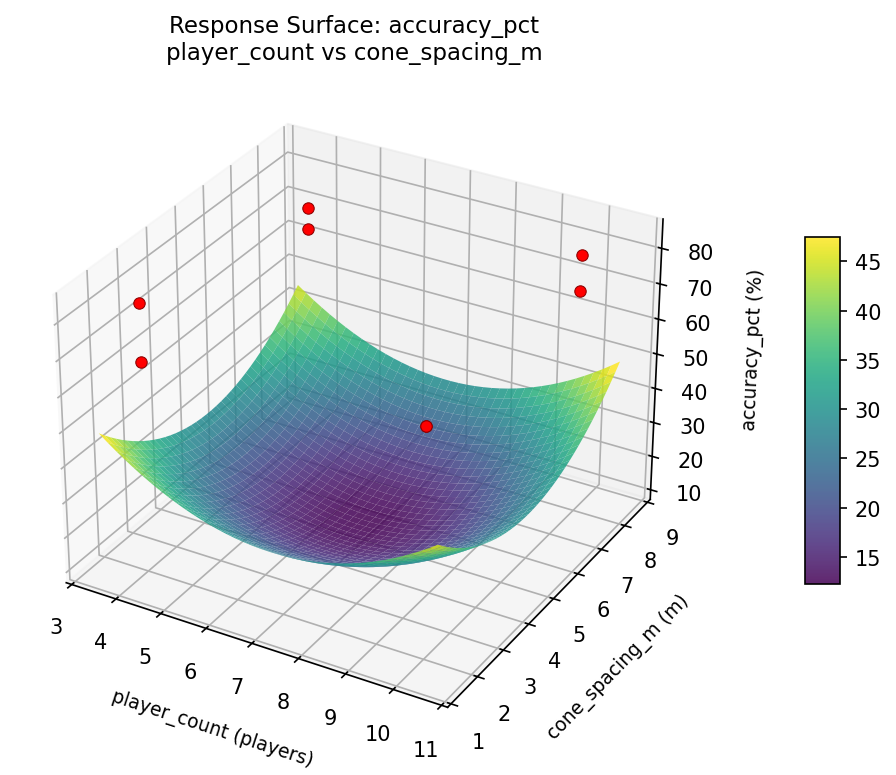
accuracy pct player count vs rest sec

accuracy pct player count vs tempo bpm

accuracy pct rest sec vs cone spacing m
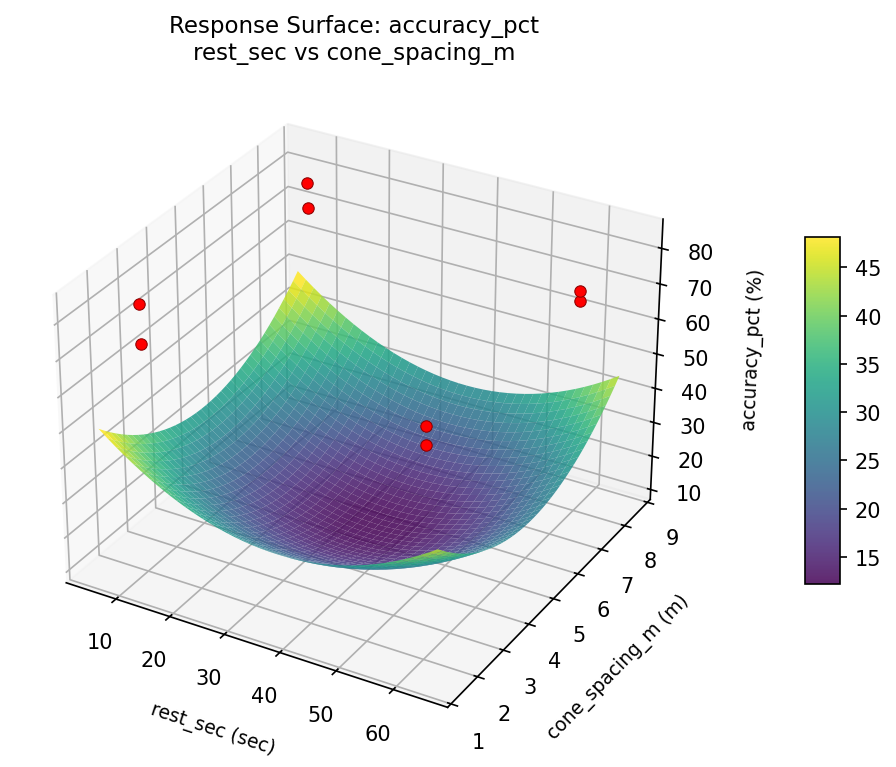
accuracy pct tempo bpm vs cone spacing m
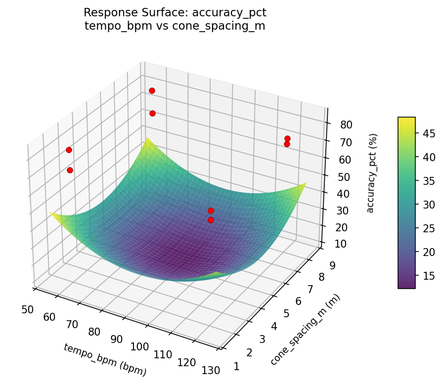
accuracy pct tempo bpm vs rest sec
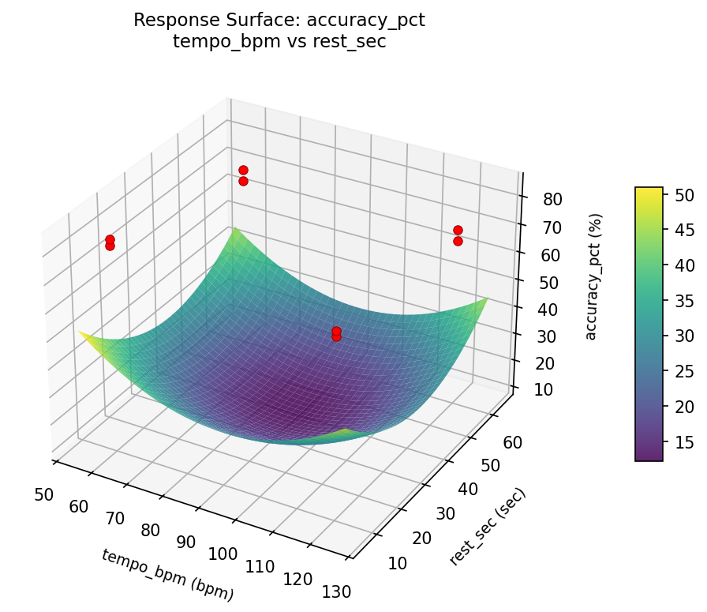
decision speed ms pass dist m vs cone spacing m

decision speed ms pass dist m vs player count
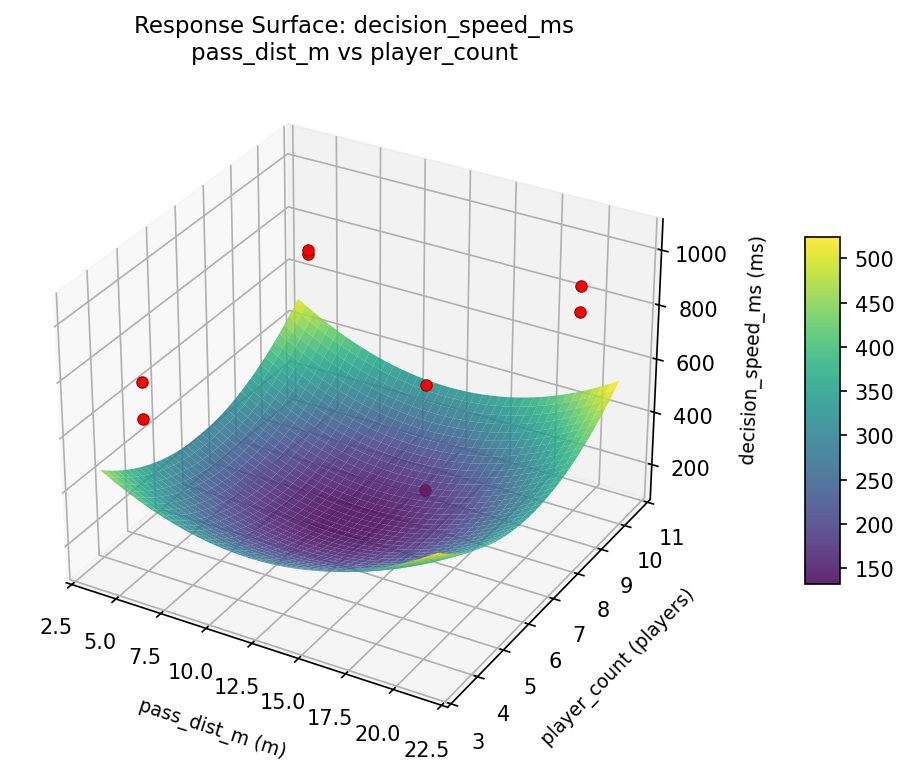
decision speed ms pass dist m vs rest sec

decision speed ms pass dist m vs tempo bpm

decision speed ms player count vs cone spacing m
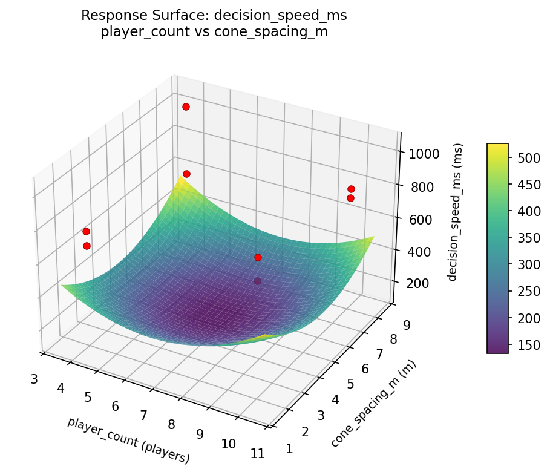
decision speed ms player count vs rest sec

decision speed ms player count vs tempo bpm

decision speed ms rest sec vs cone spacing m

decision speed ms tempo bpm vs cone spacing m
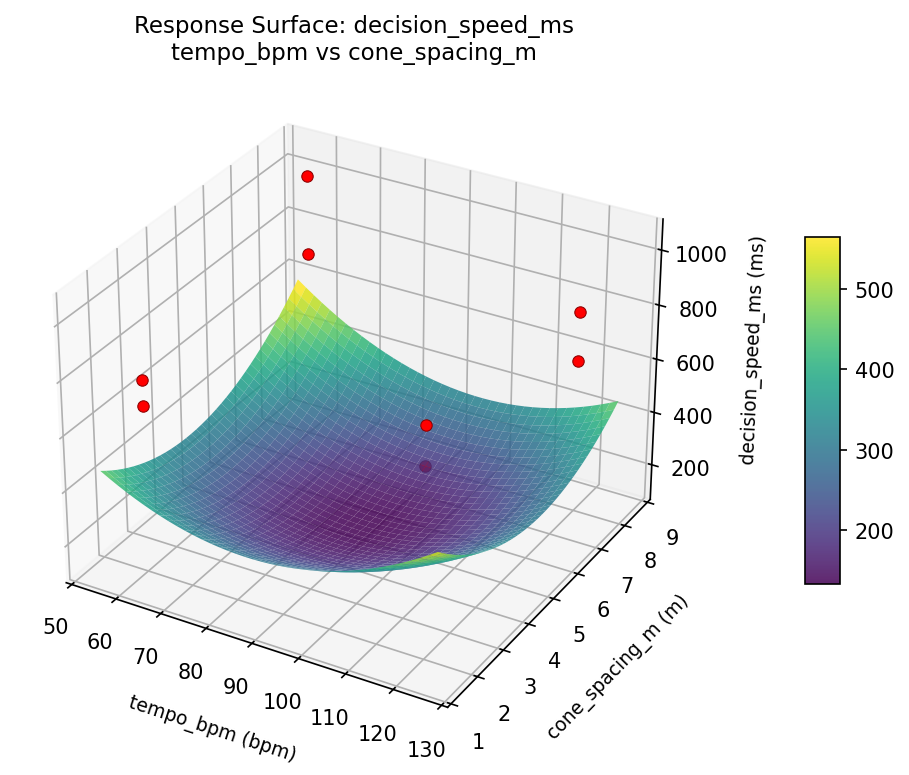
decision speed ms tempo bpm vs rest sec
Multi-Objective Optimization
When responses compete, Derringer–Suich desirability finds the best compromise.
Each response is scaled to a 0–1 desirability, then combined via a weighted geometric mean.
Overall Desirability
D = 0.9108
Per-Response Desirability
| Response | Weight | Desirability | Predicted | Dir |
|---|
accuracy_pct |
1.5 |
|
83.00 0.9545 83.00 % |
↑ |
decision_speed_ms |
1.0 |
|
680.00 0.8489 680.00 ms |
↓ |
Recommended Settings
| Factor | Value |
|---|
pass_dist_m | 5 m |
player_count | 10 players |
tempo_bpm | 60 bpm |
rest_sec | 10 sec |
cone_spacing_m | 8 m |
Source: from observed run #3
Trade-off Summary
Sacrifice = how much worse than single-objective best.
| Response | Predicted | Best Observed | Sacrifice |
|---|
decision_speed_ms | 680.00 | 632.00 | +48.00 |
Top 3 Runs by Desirability
| Run | D | Factor Settings |
|---|
| #5 | 0.7711 | pass_dist_m=20, player_count=4, tempo_bpm=60, rest_sec=60, cone_spacing_m=8 |
| #6 | 0.6024 | pass_dist_m=20, player_count=10, tempo_bpm=120, rest_sec=60, cone_spacing_m=8 |
Model Quality
| Response | R² | Type |
|---|
decision_speed_ms | 0.9664 | linear |
Full Multi-Objective Output
============================================================
MULTI-OBJECTIVE OPTIMIZATION
Method: Derringer-Suich Desirability Function
============================================================
Overall desirability: D = 0.9108
Response Weight Desirability Predicted Direction
---------------------------------------------------------------------
accuracy_pct 1.5 0.9545 83.00 % ↑
decision_speed_ms 1.0 0.8489 680.00 ms ↓
Recommended settings:
pass_dist_m = 5 m
player_count = 10 players
tempo_bpm = 60 bpm
rest_sec = 10 sec
cone_spacing_m = 8 m
(from observed run #3)
Trade-off summary:
accuracy_pct: 83.00 (best observed: 83.00, sacrifice: +0.00)
decision_speed_ms: 680.00 (best observed: 632.00, sacrifice: +48.00)
Model quality:
accuracy_pct: R² = 0.5543 (linear)
decision_speed_ms: R² = 0.9664 (linear)
Top 3 observed runs by overall desirability:
1. Run #3 (D=0.9108): pass_dist_m=5, player_count=10, tempo_bpm=60, rest_sec=10, cone_spacing_m=8
2. Run #5 (D=0.7711): pass_dist_m=20, player_count=4, tempo_bpm=60, rest_sec=60, cone_spacing_m=8
3. Run #6 (D=0.6024): pass_dist_m=20, player_count=10, tempo_bpm=120, rest_sec=60, cone_spacing_m=8
Full Analysis Output
=== Main Effects: accuracy_pct ===
Factor Effect Std Error % Contribution
--------------------------------------------------------------
rest_sec 7.0000 2.0266 43.8%
tempo_bpm -4.0000 2.0266 25.0%
pass_dist_m -3.0000 2.0266 18.8%
cone_spacing_m -2.0000 2.0266 12.5%
player_count 0.0000 2.0266 0.0%
=== ANOVA Table: accuracy_pct ===
Source DF SS MS F p-value
-----------------------------------------------------------------------------
pass_dist_m 1 18.0000 18.0000 1.500 0.2752
player_count 1 0.0000 0.0000 0.000 1.0000
tempo_bpm 1 32.0000 32.0000 2.667 0.1634
rest_sec 1 98.0000 98.0000 8.167 0.0355
cone_spacing_m 1 8.0000 8.0000 0.667 0.4513
pass_dist_m*player_count 1 32.0000 32.0000 2.667 0.1634
pass_dist_m*tempo_bpm 1 0.0000 0.0000 0.000 1.0000
pass_dist_m*rest_sec 1 8.0000 8.0000 0.667 0.4513
pass_dist_m*cone_spacing_m 1 98.0000 98.0000 8.167 0.0355
player_count*tempo_bpm 1 18.0000 18.0000 1.500 0.2752
player_count*rest_sec 1 2.0000 2.0000 0.167 0.7000
player_count*cone_spacing_m 1 72.0000 72.0000 6.000 0.0580
tempo_bpm*rest_sec 1 72.0000 72.0000 6.000 0.0580
tempo_bpm*cone_spacing_m 1 2.0000 2.0000 0.167 0.7000
rest_sec*cone_spacing_m 1 18.0000 18.0000 1.500 0.2752
Error (Lenth PSE) 5 60.0000 12.0000
Total 7 230.0000 32.8571
Note: Error estimated using Lenth's pseudo-standard-error (unreplicated design)
=== Interaction Effects: accuracy_pct ===
Factor A Factor B Interaction % Contribution
------------------------------------------------------------------------
pass_dist_m cone_spacing_m -7.0000 21.2%
player_count cone_spacing_m -6.0000 18.2%
tempo_bpm rest_sec -6.0000 18.2%
pass_dist_m player_count 4.0000 12.1%
player_count tempo_bpm 3.0000 9.1%
rest_sec cone_spacing_m 3.0000 9.1%
pass_dist_m rest_sec 2.0000 6.1%
player_count rest_sec -1.0000 3.0%
tempo_bpm cone_spacing_m -1.0000 3.0%
pass_dist_m tempo_bpm 0.0000 0.0%
=== Summary Statistics: accuracy_pct ===
pass_dist_m:
Level N Mean Std Min Max
------------------------------------------------------------
20 4 75.0000 5.4772 71.0000 83.0000
5 4 72.0000 6.3770 67.0000 81.0000
player_count:
Level N Mean Std Min Max
------------------------------------------------------------
10 4 73.5000 6.5574 68.0000 83.0000
4 4 73.5000 5.8023 67.0000 81.0000
tempo_bpm:
Level N Mean Std Min Max
------------------------------------------------------------
120 4 75.5000 7.7244 67.0000 83.0000
60 4 71.5000 2.5166 68.0000 74.0000
rest_sec:
Level N Mean Std Min Max
------------------------------------------------------------
10 4 70.0000 3.1623 67.0000 74.0000
60 4 77.0000 5.8310 72.0000 83.0000
cone_spacing_m:
Level N Mean Std Min Max
------------------------------------------------------------
2 4 74.5000 4.5092 71.0000 81.0000
8 4 72.5000 7.3258 67.0000 83.0000
=== Main Effects: decision_speed_ms ===
Factor Effect Std Error % Contribution
--------------------------------------------------------------
cone_spacing_m 105.0000 45.8402 28.8%
tempo_bpm 85.0000 45.8402 23.3%
pass_dist_m 77.5000 45.8402 21.3%
player_count -62.5000 45.8402 17.1%
rest_sec -34.5000 45.8402 9.5%
=== ANOVA Table: decision_speed_ms ===
Source DF SS MS F p-value
-----------------------------------------------------------------------------
pass_dist_m 1 12012.5000 12012.5000 0.667 0.4513
player_count 1 7812.5000 7812.5000 0.434 0.5393
tempo_bpm 1 14450.0000 14450.0000 0.802 0.4115
rest_sec 1 2380.5000 2380.5000 0.132 0.7311
cone_spacing_m 1 22050.0000 22050.0000 1.224 0.3190
pass_dist_m*player_count 1 14450.0000 14450.0000 0.802 0.4115
pass_dist_m*tempo_bpm 1 7812.5000 7812.5000 0.434 0.5393
pass_dist_m*rest_sec 1 22050.0000 22050.0000 1.224 0.3190
pass_dist_m*cone_spacing_m 1 2380.5000 2380.5000 0.132 0.7311
player_count*tempo_bpm 1 12012.5000 12012.5000 0.667 0.4513
player_count*rest_sec 1 56448.0000 56448.0000 3.133 0.1370
player_count*cone_spacing_m 1 2520.5000 2520.5000 0.140 0.7237
tempo_bpm*rest_sec 1 2520.5000 2520.5000 0.140 0.7237
tempo_bpm*cone_spacing_m 1 56448.0000 56448.0000 3.133 0.1370
rest_sec*cone_spacing_m 1 12012.5000 12012.5000 0.667 0.4513
Error (Lenth PSE) 5 90093.7500 18018.7500
Total 7 117674.0000 16810.5714
Note: Error estimated using Lenth's pseudo-standard-error (unreplicated design)
=== Interaction Effects: decision_speed_ms ===
Factor A Factor B Interaction % Contribution
------------------------------------------------------------------------
player_count rest_sec 168.0000 19.8%
tempo_bpm cone_spacing_m 168.0000 19.8%
pass_dist_m rest_sec -105.0000 12.4%
pass_dist_m player_count -85.0000 10.0%
player_count tempo_bpm -77.5000 9.1%
rest_sec cone_spacing_m -77.5000 9.1%
pass_dist_m tempo_bpm 62.5000 7.4%
player_count cone_spacing_m 35.5000 4.2%
tempo_bpm rest_sec 35.5000 4.2%
pass_dist_m cone_spacing_m 34.5000 4.1%
=== Summary Statistics: decision_speed_ms ===
pass_dist_m:
Level N Mean Std Min Max
------------------------------------------------------------
20 4 757.7500 125.0183 632.0000 906.0000
5 4 835.2500 139.9676 758.0000 1045.0000
player_count:
Level N Mean Std Min Max
------------------------------------------------------------
10 4 827.7500 155.1803 680.0000 1045.0000
4 4 765.2500 111.9803 632.0000 906.0000
tempo_bpm:
Level N Mean Std Min Max
------------------------------------------------------------
120 4 754.0000 55.0575 680.0000 813.0000
60 4 839.0000 177.1346 632.0000 1045.0000
rest_sec:
Level N Mean Std Min Max
------------------------------------------------------------
10 4 813.7500 172.1305 632.0000 1045.0000
60 4 779.2500 93.8203 680.0000 906.0000
cone_spacing_m:
Level N Mean Std Min Max
------------------------------------------------------------
2 4 744.0000 78.1921 632.0000 813.0000
8 4 849.0000 160.5013 680.0000 1045.0000
Optimization Recommendations
=== Optimization: accuracy_pct ===
Direction: maximize
Best observed run: #3
pass_dist_m = 5
player_count = 4
tempo_bpm = 120
rest_sec = 60
cone_spacing_m = 2
Value: 83.0
RSM Model (linear, R² = 0.2935, Adj R² = -1.4728):
Coefficients:
intercept +73.5000
pass_dist_m -2.2500
player_count +1.2500
tempo_bpm +0.5000
rest_sec +1.0000
cone_spacing_m -0.7500
Predicted optimum (from linear model, at observed points):
pass_dist_m = 5
player_count = 10
tempo_bpm = 60
rest_sec = 60
cone_spacing_m = 2
Predicted value: 78.2500
Surface optimum (via L-BFGS-B, linear model):
pass_dist_m = 5
player_count = 10
tempo_bpm = 120
rest_sec = 60
cone_spacing_m = 2
Predicted value: 79.2500
Model quality: Weak fit — consider adding center points or using a different design.
Factor importance:
1. pass_dist_m (effect: 4.5, contribution: 39.1%)
2. player_count (effect: -2.5, contribution: 21.7%)
3. rest_sec (effect: 2.0, contribution: 17.4%)
4. cone_spacing_m (effect: -1.5, contribution: 13.0%)
5. tempo_bpm (effect: -1.0, contribution: 8.7%)
=== Optimization: decision_speed_ms ===
Direction: minimize
Best observed run: #6
pass_dist_m = 20
player_count = 10
tempo_bpm = 120
rest_sec = 10
cone_spacing_m = 2
Value: 632.0
RSM Model (linear, R² = 0.5891, Adj R² = -0.4382):
Coefficients:
intercept +796.5000
pass_dist_m +19.2500
player_count -29.2500
tempo_bpm -84.0000
rest_sec -3.5000
cone_spacing_m -19.2500
Predicted optimum (from linear model, at observed points):
pass_dist_m = 20
player_count = 4
tempo_bpm = 60
rest_sec = 10
cone_spacing_m = 2
Predicted value: 951.7500
Surface optimum (via L-BFGS-B, linear model):
pass_dist_m = 5
player_count = 10
tempo_bpm = 120
rest_sec = 60
cone_spacing_m = 8
Predicted value: 641.2500
Model quality: Moderate fit — use predictions directionally, not precisely.
Factor importance:
1. tempo_bpm (effect: 168.0, contribution: 54.1%)
2. player_count (effect: 58.5, contribution: 18.8%)
3. pass_dist_m (effect: -38.5, contribution: 12.4%)
4. cone_spacing_m (effect: -38.5, contribution: 12.4%)
5. rest_sec (effect: -7.0, contribution: 2.3%)